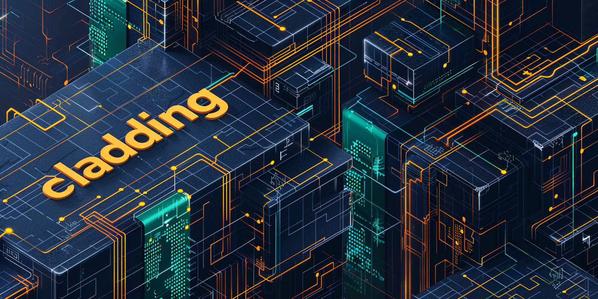
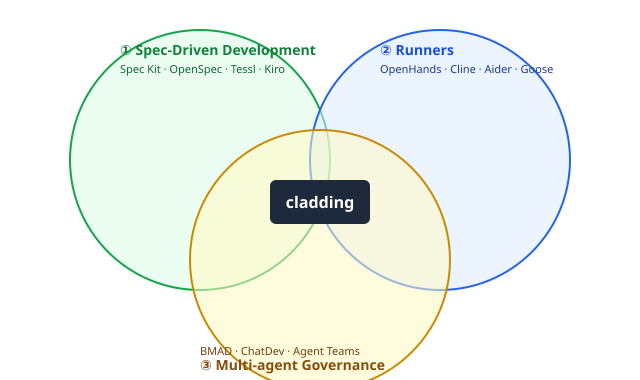

English · 한국어
cladding
Unified Governance for AI-Coupled Engineering.
AI-generated code, held to the same bar as human code.
Reference implementation of the Ironclad standard. 28 detectors and a 13-stage gate verify, on every commit, that the code your AI assistant wrote still matches the spec.
Same spec · same model · event-sourcing store benchmark
Why
The reason an AI assistant wrote code a certain way doesn't survive in the code alone.
spec/features/*.yaml becomes the permanent record of whyThe same spec produces code with inconsistent patterns and structure.
Generated code calls APIs, functions, or options that don't exist.
What you get
How a vanilla AI coding environment and a cladding environment behave when the same situation comes up.
| Situation | Vanilla AI coding | cladding |
|---|---|---|
| Code drifts from spec | fixed if a reviewer notices | auto-blocked on every commit |
| Two devs build the same feature in parallel | merge conflicts | hash-based IDs route to separate files → 0 conflicts |
| Who verifies AI-written code? | the AI that wrote it (risky) | a separate reviewer agent — duties split |
| Switching AI tools (Claude → Cursor) | reconfigure per tool | one spec → mirrored across 4 hosts |
| Spec authority | the AI reinterprets it each time | the sealed spec is the single source of truth |
The hero's 8/8 vs 2/8 is an early benchmark (details) · larger-scale measurements are in progress.
How it works
Spec → Code → Tests runs as a single cycle — the spec captures the why, Iron Law verifies the implementation, and Drift Detection blocks anything that no longer matches.

1. Spec — SSoT, single source of intent
The spec is where the why (what we're building and why) lives. A 4-tier (A/B/C/D) Single Source of Truth — intent on top, implementation below.
| Tier | Role | Who edits | Authority |
|---|---|---|---|
| A — Spec | intent (what to build) | humans only | sealed · LLMs cannot edit |
| B — Design | design (how to build it) | humans freely | checked against A |
| C — Derived | implementation (code · tests) | LLMs and humans | regenerated by reading the code |
| D — Audit | audit log (what actually happened) | append-only | immutable |
A outranks B — if code and spec disagree, the code is wrong. The spec is sealed because changing the why shakes everything downstream, so LLMs are kept out.
Sharded · multi-dev safe — spec/features/<slug>-<hash6>.yaml puts each feature in its own file with a 6-char hash ID (e.g. F-5f6b45). Two devs creating new features at the same time land in different files with different IDs — zero merge conflicts. Details: Hash-based feature IDs.

2. Code — Iron Law (required) gate
Every change has to clear all 13 stages — typically called from CI, a git pre-push hook, or manual clad check. Each stage ships with its own unit tests.

| Stage | What it checks |
|---|---|
| 1.1 Type · 1.2 Lint | type errors · code style |
| 1.3 Drift | spec ↔ code mismatches across 28 detectors |
| 1.4 Commit · 1.5 Arch · 1.6 Secret | clean working tree · architecture invariants (forbidden imports, etc.) · leaked API keys |
| 2.1 Unit · 2.2 Cov | unit tests pass · project coverage threshold |
| 3.1 Smoke · 3.2 Perf · 3.3 Visual | end-to-end critical paths · performance budgets · visual regression |
| 4.1 Audit · 4.2 UAT | every AC (acceptance criteria) has at least one piece of evidence · every status=done feature has at least one piece of evidence |
3. Tests — 28 drift detectors
Seven categories of mismatch across spec · code · test, all caught automatically. Full catalog: src/stages/detectors/README.md.
| Category | What it catches | Count | Representative detectors |
|---|---|---|---|
| spec ↔ code drift | something in the spec missing from code, or in code with nothing in the spec | 6 | UNMAPPED_ARTIFACT, MISSING_IMPLEMENTATION, AC_DRIFT |
| code ↔ test | code without tests · coverage falling below threshold | 6 | MISSING_TESTS, COVERAGE_DROP, HARDCODED_SECRET |
| spec ↔ test | an AC in the spec that no test actually verifies | 4 | UNTESTED_AC, STATUS_DRIFT, STALE_EVIDENCE |
| spec maintenance | spec hygiene — slug collisions, ID duplicates | 5 | SLUG_CONFLICT, ID_COLLISION, ENRICHMENT_PENDING |
| environment integrity | build environment and meta-file integrity | 3 | HARNESS_INTEGRITY, META_INTEGRITY |
| architecture · capability | code that breaks the architecture or capability shape declared in the spec | 2 | ARCHITECTURE_FROM_SPEC, CAPABILITIES_FEATURE_MAPPING |
| governance · policy | code that breaks an ai_hints policy (e.g. forbidden patterns) | 2 | AI_HINTS_FORBIDDEN_PATTERN, ABSENCE_OF_GOVERNANCE |
4. Cycle — one feature's lifecycle
The 4 steps that wrap Spec → Code → Test into a single cycle. Merge if drift is 0, block otherwise.

Multi-Agent Workflow
cladding is a 5-agent system working in concert. Each agent has a clear role under CQS (Command-Query Separation — the agents that do are kept apart from the agents that verify), so no agent can sign off on its own work. This is the foundation that maps cleanly to compliance regimes (EU AI Act · K-AI Framework · SOX).

Ecosystem
cladding sits at the intersection of three existing categories.

How cladding differs from the neighbors
- Spec Kit · OpenSpec · Tessl · Kiro help you write a good spec. cladding goes further — it verifies on every commit that the code still matches that spec.
- BMAD · ChatDev · Claude Code Agent Teams are about splitting work across multiple AI agents. cladding's 5 agents take that further by tying spec, code, and audit log into the same loop.
- tdd-guard forces test-first development. That's roughly what the Unit · Coverage stages do inside cladding's 13-stage gate.
- OpenHands · Cline · Aider · Goose are runners — they tell the AI to write code. cladding is the governance layer that verifies and controls what those runners produce.
cladding's edge is the combination — it folds the strongest parts of all four categories into one verification loop.
Install
Two steps: install the infrastructure, then create the project spec.
Step 1 — Install the infrastructure
Pick the route that fits how you work — both land in the same place:
(a) npm — for terminal / CI users
npm install -g cladding # install the cladding CLI
cd <project> # go to your project
clad setup # connect your AI tools (Claude / Codex / Gemini)(b) Marketplace — for AI-tool plugin users
- Open the plugin marketplace inside your AI tool (Claude Code · Codex CLI · Gemini CLI)
- Search for cladding and install it
- No
clad setupneeded — the plugin manifest wires everything
Where clad setup connects (5 host channels)
| Host (when detected) | Wired location | Auto-activation |
|---|---|---|
Claude Code (~/.claude/) | ~/.claude/plugins/cladding | claude plugin marketplace add + install |
Codex CLI skills (~/.agents/) | ~/.agents/skills/cladding-* | (auto on Codex restart) |
Codex CLI MCP server (~/.codex/) | [mcp_servers.cladding] in ~/.codex/config.toml | (TOML entry itself) |
Gemini CLI (~/.gemini/) | ~/.gemini/extensions/cladding | gemini extensions link |
Cursor (~/.cursor/) | mcpServers.cladding in ~/.cursor/mcp.json | (JSON entry itself) |
clad setup invokes the per-host activation commands automatically when claude / gemini binaries are on PATH. Safe to re-run after a cladding upgrade or after installing another AI tool.
Step 2 — Init (create the project spec)
Inside your project, run it once from your AI tool:
[inside your AI tool] /cladding init "B2B payment SaaS"Or from the terminal directly:
clad init "B2B payment SaaS"This creates spec.yaml and the 4-tier docs. One-time per project.
Three init scenarios
clad init takes a natural-language intent and picks the right path on its own. Same command, three starting points.
| Starting point | Command (npm path) | What happens |
|---|---|---|
| An idea, nothing else | clad init "I want to build a B2B payment SaaS" | LLM infers the domain → spec · docs · policies generated, with 2–3 follow-up questions printed |
| A planning doc | clad init docs/plan.md | cladding detects the file path, loads its contents, and uses them as the intent (absolute and relative paths both work) |
| Adopting into an existing project | clad init "apply cladding to this project" | scans the existing code (≥3 source files trigger it) → observed patterns are merged with the intent |
In a marketplace install (Claude Code · Codex CLI · Gemini CLI) the format is/cladding init "..."— works the same with free text and with paths like/cladding init docs/plan.md.
Init once, then carry on
cladding's goal is to be the infrastructure that prevents spec ↔ code drift — after init, you just keep coding. The AI references the spec while it writes, and clad check runs automatically in CI or as a pre-commit hook to block anything that drifts. No extra commands to remember.
Status
|
version
v0.3.60
2026-05
|
conformance
L4
top tier · self-declared
|
tests
954/954
all pass
|
coverage
93.89%+
enforced
|
features
135
spec'd
|
101 test files · installable from the Claude Code · OpenAI Codex · Gemini CLI marketplaces
Road to Ironclad 1.0 — 1.0 locks when two independent implementations pass the L4 conformance fixtures (GOVERNANCE § 1). cladding is the first one.
Docs
- Why cladding (project context)
- 4-tier governance model
- Hash-based feature IDs
- 28 detector catalog
- Benchmark — event store trap catch
- A/B evaluation cases
- Governance · roadmap to 1.0
License
MIT. LICENSE · Related: Ironclad (the standard cladding implements) · harness-boot (the seed project).